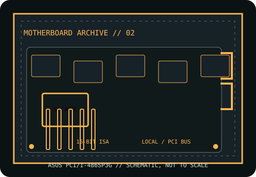

[ HISTORICAL SYSTEM BOARD // IDENTIFIED MODEL ]
ASUS PCI/I-486SP3G
mid-1990s Socket 3 PCI/ISA 486 desktop board. This record distinguishes the exact model from related variants and requires revision-matched documentation for service.

IDENTIFY THE PCB: Record model suffix, board revision, chipset markings, BIOS label and date codes before applying any family-level compatibility information.
Model specifications
| Exact model | ASUS PCI/I-486SP3G |
|---|---|
| Generation / chipset | mid-1990s Socket 3 PCI/ISA 486 desktop board; 486 PCI chipset; identify the north/south bridge and board revision from PCB silkscreen before using a family-level spec. |
| CPU socket / processor | Socket 3 486 family, with exact SX/DX/DX2/DX4 and upgrade-CPU support dependent on board revision, voltage selection, bus clock and BIOS. |
| RAM technology / capacity | 72-pin SIMM FPM DRAM; module density, parity and maximum capacity must follow the matching manual and populated socket banks. |
| Form factor | Baby AT. |
| Bus, slots & I/O | PCI and 16-bit ISA slots; IDE and floppy interfaces, serial/parallel ports, keyboard and optional PS/2 headers vary by board revision. |
| Jumpers / BIOS compatibility | BIOS and CPU tables are revision-dependent. Set core voltage, bus speed and multiplier only from the model-matched jumper table; preserve original ROM labels. |
Jumper, BIOS & compatibility notes
The slash-name PCI/I model is distinct from ASUS PVI-486SP3 and other SP3 boards. Confirm the exact suffix, jumper map and BIOS identification before processor upgrades or BIOS replacement.
BIOS and CPU tables are revision-dependent. Set core voltage, bus speed and multiplier only from the model-matched jumper table; preserve original ROM labels. Matching socket or connector geometry alone does not establish CPU, memory or firmware compatibility.
Safety & preservation
ESD-safe handling; inspect battery leakage and socket/VRM corrosion. Document all jumpers and SIMM locations. Keep the AT P8/P9 black conductors aligned at the center; a reversed connector pair can destroy the board.
Preserve provenance, original labels, jumpers and test conditions. Photograph the board before repair; avoid aggressive cleaning or desoldering until corrosion and component risks are documented.
Manufacturer and archive manuals
- ASUS PCI/I-486SP3G manual — ManualsLibManual archive with board setup, memory and jumper diagrams.
- ASUS PCI/I-486SP3G scanned manual — The Retro WebArchived manual scan; compare its layout and revision with the physical PCB.
- ASUS PCI/I-486SP3G model documentation — The Retro WebArchived model record and supporting historical material.
Archived copies may cover another board revision. Compare manual diagrams and revision identifiers with the physical PCB; do not flash firmware or set voltage jumpers from a related model's manual.